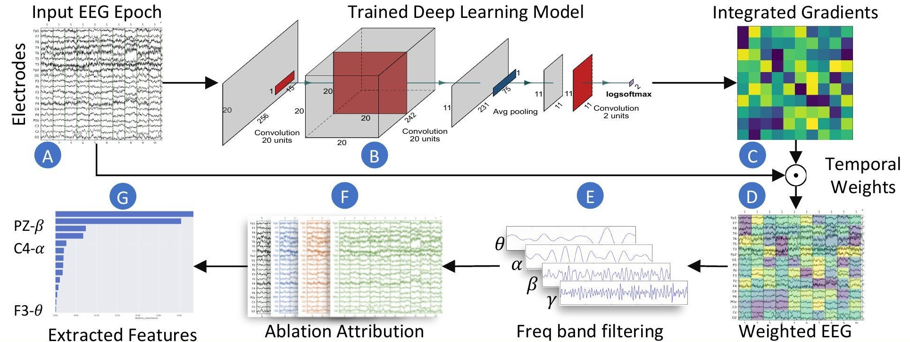

Extracting Interpretable EEG Features from a Deep Learning Model to Assess the Quality of HRI

Imagine a world where robots work hand-in-hand with humans, anticipating our needs and adapting to our mental state. This future is becoming increasingly real, with human-robot collaboration poised to transform industries from manufacturing and logistics to healthcare and assistive technologies. But to achieve truly seamless interaction, robots need to understand not only our actions but also our thoughts and cognitive processes.
Enter electroencephalography (EEG), a technique that measures brain activity using sensors on the scalp. EEG offers a window into the brain’s dynamic processes, but interpreting its complex signals remains a challenge. While deep learning models have shown success in decoding EEG data [14], they often act as “black boxes” – we see the results, but we don’t know how the model arrived at them. This lack of transparency hinders our ability to trust and fully utilize these powerful tools.
Our research addresses the interpretability of deep learning models in human-robot co-manipulation. We developed a novel computational approach to understand how these models classify a user’s mental workload during collaboration with a robot.
Decoding the complex signals of the brain using deep learning while understanding why the model makes its decisions.
A Glimpse into the Experiment
To study mental workload, we designed an experiment where participants guided a robot’s movements. The tasks involved:
- Gross Motor Control: Guiding the robot through a horizontal eight-shaped motion.
- Fine Motor Control: Performing a star-shaped fine motion.
We also manipulated the robot’s resistance (damping) between high (requiring more effort) and low (allowing easier movement) levels. This created conditions where the damping was either appropriate or inappropriate for the specific movement, influencing the user’s mental workload. Our Convolutional Neural Network (CNN) model was trained to distinguish between these conditions using raw EEG recordings.
To enhance the interpretability of deep learning models applied to EEG data, specifically in the context of classifying mental workload during human-robot co-manipulation.
Our Novel Approach: Making the “Black Box” Transparent
Our key contribution is our method to understand how our deep learning model (a CNN) made its decisions. We used two powerful techniques, adapting methods commonly used in computer vision:
- Integrated Gradients: This method assigns importance scores to the input features (EEG data points) by considering the gradient of the output with respect to the input along a path from a baseline input to the actual input. Think of it as tracing back the model’s decision to the original EEG signals [11, 12].
- Ablation Attribution: Here, we systematically removed parts of the input EEG data (e.g., data from specific electrodes or frequency bands) and observed how the model’s performance changed. If removing a particular feature significantly decreased performance, it indicates that the feature was important for the classification.
By combining these methods, we created a pipeline that extracts interpretable features from EEG data, providing unprecedented insight into the brain activity patterns associated with mental workload in human-robot collaboration.
We used Integrated Gradients and Ablation Attribution to understand which EEG features were most important to our deep learning model.
Decoding the Brain: Key Findings
Our analysis revealed that the model relied heavily on specific brainwave frequencies and locations:
- Gamma and Beta Bands: As highlighted in our abstract, the Gamma and Beta frequency bands were particularly relevant for classifying mental workload in this visuospatial and motor control-oriented experiment. These higher-frequency brainwaves are often associated with active processing of information, attention, and motor control [15].
- Parietal Regions: Our method also indicated the importance of EEG signals originating from the parietal regions of the brain. These areas play a crucial role in spatial awareness, sensorimotor integration, and attention.
These findings strongly suggest that Gamma and Beta activity over the parietal areas indicates mental workload when humans co-manipulate a robot, particularly during tasks requiring visual attention and motor coordination.
The model heavily relied on Gamma and Beta brainwave activity in the parietal regions to assess mental workload.
The Path to Smarter Human-Robot Collaboration
Our ability to interpret deep learning models opens up exciting possibilities:
- Adaptive Robots: Robots could dynamically adjust their behavior based on a user’s real-time mental workload, providing assistance when needed and reducing demands when the user is overloaded.
- Enhanced Training: Our findings can inform the design of training programs that optimize human-robot interaction and minimize mental strain.
- Trustworthy AI: Understanding how these models work builds greater trust in AI-powered systems, paving the way for more seamless and effective collaboration.
This research represents a significant step towards creating more intuitive and responsive human-robot interfaces. By shedding light on the brain activity patterns that underlie collaborative work, we can design robots that are true partners, enhancing human capabilities and improving our lives.
What are your thoughts on the future of human-robot collaboration? How can interpretable AI in neurotechnology address challenges in other domains like healthcare or education?